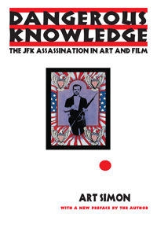

<body bgcolor="#FFFFFF" text="#000000" link="#0000FF" vlink="#CC0000" alink="#CC0000"><center><hr width="350" size="1" align="center" noshade>On the historic 50th Anniversary, this reissued edition looks at the contemporary meanings and influences of images of the JFK assassination by filmmakers, photographers, and artists<hr width="350" size="1" align="center" noshade><p><a href="https://cdcshoppingcart.uchicago.edu/Cart/ChicagoBook.aspx?ISBN=9781439910443&&PRESS=temple" target="_top">Buy this book!</a> | <a href="https://cdcshoppingcart.uchicago.edu/Cart/Cart.aspx?PRESS=temple" target="_top">View Cart</a> | <a href="https://cdcshoppingcart.uchicago.edu/Cart/Cart.aspx?PRESS=temple" target="_top">Check Out</a></p><p></p></center><!--none//--><h1>Dangerous Knowledge</h1>
<H2>The JFK Assassination in Art and Film</H2>
<H2>With a New Preface by the Author</H2>
<h3>Art Simon</h3>
<P>paper 1-4399-1044-8 $28.95, Jan 13, <FONT COLOR=#990033>Available</FONT>
<br>Electronic Book 1-4399-1045-6 $27.95 <FONT COLOR=#990033></FONT>
<BR> 298 pp
5.25x9
9&nbsp;color&nbsp;illustrations
</P><P>Fifty years ago, the assassination of John F. Kennedy shocked the world and focused attention to the 8mm footage shot by Abraham Zapruder. The event fueled conspiracy theories and repeated viewings of Zapruder's film as seemingly everyone in the world searched for motive and conclusive proof of a single gunman.
<P>In his new Preface to this edition of <I>Dangerous Knowledge</I>, Art Simon discusses public fascination with celebrity deaths and recent assassination-related media�from documentaries to scholarly books to the scandalous video game <I>JFK Reloaded</I>�to show that the assassination continues to inspire writers, artists, and filmmakers.
<P><I>Dangerous Knowledge</I> examines the seminal works of art associated with the assassination, including Andy Warhol's silk screens, the underground films of Bruce Conner, and provocative Hollywood films like <I>The Parallax View</I> and <I>JFK</I>. Simon's investigation places assassination art and images within a historical context�one that helps us understand what the assassination has meant to American culture.
<BR>&nbsp;<h2>Excerpt</h2><P>Excerpt available at <a href="http://www.temple.edu/tempress">www.temple.edu/tempress</a></p>
<BR>&nbsp;<h2>Reviews</h2>
<p>Praise for the First Edition:
<p><i>"This history of the representation of the JFK assassination makes a terrific contribution to film studies and indeed to cultural studies generally. Moving with wit and erudition across political history, avant-garde film, serigraphy, journalism, and mass-market film, Simon transcends the banalities of the high culture/low culture binary to produce a study of exemplary range and insight."</I>
<br>&#151<b>David E. James</b>, School of Cinema-Television, University of Southern California
<p><i>"Simon�s employment of both cultural and film theory provides enlightening exploration into a seminal, yet elusive, moment in history and into a culture that continues to provide revisions of that history."</i> <br>&#151;<b><i>American Studies</i></b>
<p><i>"Beginning with a description of a poster for a punk band and ending with a critique of the movie JFK, this work marshals an impressive array of cultural information in attempting to provide an overall history of the genre. Simon closely examines images and films, relating them to the continuing struggle over the authoring and interpretation of the story of Kennedy's death."</i> <br>&#151;<b><i>Library Journal</i></b>
<p>Praise for the Updated Edition:
<p><i>"[A] reissue (with a new 10-page preface) of the 1996 book, out in time for the 50th anniversary of November 22, 1963. The new preface places the study and the event it relates in the broader context of the continuing public fascination with celebrity deaths�and, sadly, assassinations as well."</i> <br>&#151<b><i>Communication Booknotes Quarterly</i></b>
<BR>&nbsp;<h2>Contents</h2><P>
<p>Preface to the New Paperback Edition
<br>Acknowledgments
<br>Introduction: the Assassination Debates
<p><b>Part I</b>
<br>1. The Zapruder Film
<br>2. The Body
<br>3. Images of Oswald
<p><b>Part II</b>
<br>4. The Warhol Silkscreens
<br>5. The Pop Camp
<br>6. Bruce Conner
<br>7. Assassination Video
<p><b>Part III</b>
<br>8. Executive Action
<br>9. <I>The Parallax View/Winter Kills/Blow Out</I>
<br>10. JFK
<p>Epilogue
<br>Notes
<br>Index
</P><BR>&nbsp;<H2>About the Author(s)</H2>
<P><b>Art Simon</b> is Associate Professor of Film Studies in the English Department at Montclair State University and is co-editor (with Cynthia Lucia and Roy Grundmann) of <i>The Wiley-Blackwell History of American Film</i>.</P>
<BR><H2>Subject Categories</H2>
<p><A HREF="/tempress/american.html" TARGET="_top">American Studies</a>
<BR><A HREF="/tempress/cinema.html" TARGET="_top">Cinema Studies</a>
<BR><A HREF="/tempress/art.html" TARGET="_top">Art and Photography</a>
</p>
<p align="center"><a href="https://cdcshoppingcart.uchicago.edu/Cart/ChicagoBook.aspx?ISBN=9781439910443&&PRESS=temple" target="_top">Buy this book!</a> | <a href="https://cdcshoppingcart.uchicago.edu/Cart/Cart.aspx?PRESS=temple" target="_top">View Cart</a> | <a href="https://cdcshoppingcart.uchicago.edu/Cart/Cart.aspx?PRESS=temple" target="_top">Check Out</a></p><p><font face="Arial" size="1"><a href="copyright.html" onMouseOver="window.status='Web Copyright Policy';return true;" onMouseOut="window.status=''" title="Web Copyright Policy">&copy;</a> 2015 <a href="http://www.temple.edu" target="new" onMouseOver="window.status='Link to Temple University home page';return true;" onMouseOut="window.status=''" title="Link to Temple University home page">Temple University</a>. All Rights Reserved. http://www.temple.edu/tempress/titles/1189NE_reg.html</font></p>